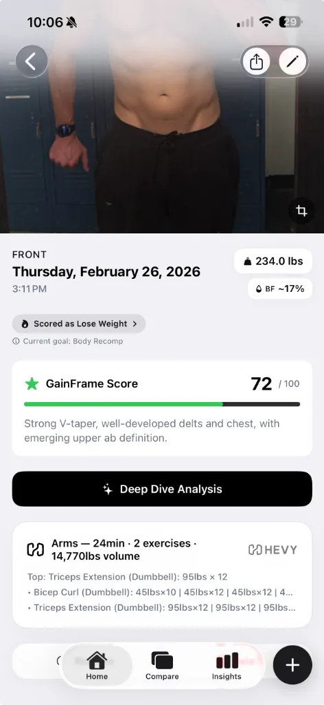

7 Best Body Transformation Apps in 2026 (Ranked & Compared)
Most progress photo apps feel like they were built in 2018 and never updated. We tested every major option to find which ones actually help you track a body transformation — and which ones are wasting your time.
1. GainFrame — Best for AI-powered physique analysis
Platform: iOS App Store · Price: Free with Pro subscription

GainFrame takes a different approach than most apps on this list. Instead of asking you to set up a tripod and take controlled photos, it works with whatever gym selfies you already have in your camera roll. Point it at an album and it auto-imports, deduplicates, and sorts your progress photos by date.
The standout feature is what they call a "Deep Dive" — an AI analysis that runs on every photo. You get estimated body fat %, BMI, FFMI, a composite physique score (0–100), and individual ratings for 12 muscle groups. It's more granular than what Formfy or Recomp AI offer, and unlike those apps it tracks changes over time rather than giving you a one-off snapshot.
When you compare two photos side by side, the AI quantifies exactly what changed and generates training recommendations — things like "Upper Chest Focus" or "High-Protein Deficit" with daily macro targets. It also has a Future Physique prediction that generates an AI image of where you could be in 12 months, which is either motivating or terrifying depending on your perspective.
If you use Hevy to track your lifts, GainFrame auto-attaches that day's workout to the photo — so you can see what you trained alongside what you looked like. No other app on this list connects workout data to progress photos.
Best for: Lifters who want AI-driven analysis of their physique, not just a photo album with reminders. If you want your progress photos to actually tell you something, this is the strongest option in 2026.
2. Metamorph — Best for time-lapse transformation videos
Platform: iOS App Store · Price: Free with Pro subscription
Metamorph focuses on capturing consistent progress photos using auto-alignment overlays and customizable reminders. Its standout feature is the ability to compile photos into time-lapse or before-and-after videos you can share on social media.
Strengths: Privacy-first (photos stay on device or iCloud), good alignment tools, solid reminder system. The time-lapse videos are genuinely impressive when you've accumulated months of data.
Weaknesses: No AI analysis of any kind — it doesn't estimate body fat, score your physique, or tell you what changed. It's a photo storage and alignment tool, not an analysis tool. You're still doing all the interpretation yourself.
Best for: People who want polished time-lapse videos of their transformation and don't need AI-generated insights.
3. Progress — Best for minimalist photo tracking
Platform: iOS App Store · Price: Free with Pro subscription
Progress is a simple, well-designed app for organizing progress photos by day, week, or month. It's straightforward — take or import photos, organize them, and scroll through to see your journey.
Strengths: Clean interface, easy to use, no learning curve. It does one thing — stores and organizes your photos — and does it well.
Weaknesses: No body fat estimation, no scoring, no AI analysis, no workout integration. No comparison reports. It's essentially a specialized photo album with a reminder system.
Best for: People who just want a dedicated space for progress photos separate from their camera roll, with zero complexity.
4. Snaptrack — Best for consistent photo alignment
Platform: iOS App Store · Price: Free with in-app purchases
Snaptrack's "Body Overlay" feature helps you take consistently aligned photos by showing a translucent guide overlay. It includes reminders and basic before-and-after tools.
Strengths: The body overlay alignment is helpful for ensuring consistency. Good for someone building a habit of taking weekly photos.
Weaknesses: No AI, no body composition data, no integrations. The comparison tools are basic side-by-side placement with no analysis or insights. You're the one who has to decide whether you've made progress.
Best for: Beginners who need help building the habit of taking consistent progress photos.
5. My Body Tracker: PhotoJourney — Best camera guide tools
Platform: iOS App Store · Price: Free with Pro subscription
PhotoJourney offers a "Ghost Mode" camera guide and can create time-lapse transformation videos. It supports body measurements and manual data tracking.
Strengths: Ghost Mode helps with alignment, time-lapse videos are a nice touch, and manual measurement tracking adds extra data points.
Weaknesses: Users on the App Store have reported photos getting randomly deleted — a dealbreaker for a progress tracking app. No AI analysis. The interface feels dated compared to newer options.
Best for: People who want ghost-overlay camera guidance with manual body measurements. (But backup your photos.)
6. Formfy — Best for quick body fat scans
Platform: iOS App Store · Price: Free with subscription
Formfy offers AI body fat estimation from a single full-body photo, plus meal photo scanning for calorie counting. It's positioned as an all-in-one fitness and nutrition tracker.
Strengths: The one-photo body fat scan is fast and convenient. The meal scanning is a useful bonus feature if you're tracking calories.
Weaknesses: No side-by-side comparison, no timeline tracking, no workout integration. It gives you a snapshot-in-time body fat estimate, but doesn't help you track changes over weeks and months. There's no scoring system or muscle group analysis.
Best for: People who want a quick body fat estimate without needing a full tracking system.
7. Recomp AI — Best for body recomposition focus
Platform: iOS App Store · Price: Free with subscription
Recomp AI is an AI body scanner built specifically for body recomposition tracking. It estimates body fat, lean mass, and physique changes, with nutrition tracking support.
Strengths: Focused specifically on the body recomp use case. AI scanning provides body fat and lean mass estimates.
Weaknesses: No photo timeline or long-term progress tracking. No comparison features. No workout integration. It's oriented around individual scans rather than tracking a transformation over time.
Best for: People specifically going through a body recomposition who want AI-estimated body fat without the broader tracking features.
How the best body transformation apps compare
| Feature | GainFrame | Metamorph | Progress | Snaptrack | Formfy | Recomp AI |
|---|---|---|---|---|---|---|
| AI Body Fat % | ✅ | ❌ | ❌ | ❌ | ✅ | ✅ |
| Muscle Group Scoring | ✅ 12 groups | ❌ | ❌ | ❌ | ❌ | ❌ |
| AI Comparison Reports | ✅ with recs | ❌ | ❌ | ❌ | ❌ | ❌ |
| Future Physique Prediction | ✅ | ❌ | ❌ | ❌ | ❌ | ❌ |
| Workout Integration | ✅ Hevy | ❌ | ❌ | ❌ | ❌ | ❌ |
| Auto Photo Import | ✅ Album sync | Manual | Manual | Manual | Manual | Manual |
| Duplicate Removal | ✅ Auto | ❌ | ❌ | ❌ | ❌ | ❌ |
| Shareable Reports | ✅ | Time-lapse | ❌ | ❌ | ❌ | ❌ |
| Tripod Required | No | Recommended | No | Recommended | No | No |
The verdict
If you just need a photo album with reminders, Progress or Snaptrack will do the job. If you want slick time-lapse videos, Metamorph is your best bet.
But if you want your progress photos to actually tell you something — body fat trends, muscle group improvements, actionable training recommendations, and a prediction of where you're headed — GainFrame is the only app in 2026 that does all of that, without requiring a tripod or a degree in photo editing.
You do the training. GainFrame does the analysis. And the reports look so good you'll actually want to share them.